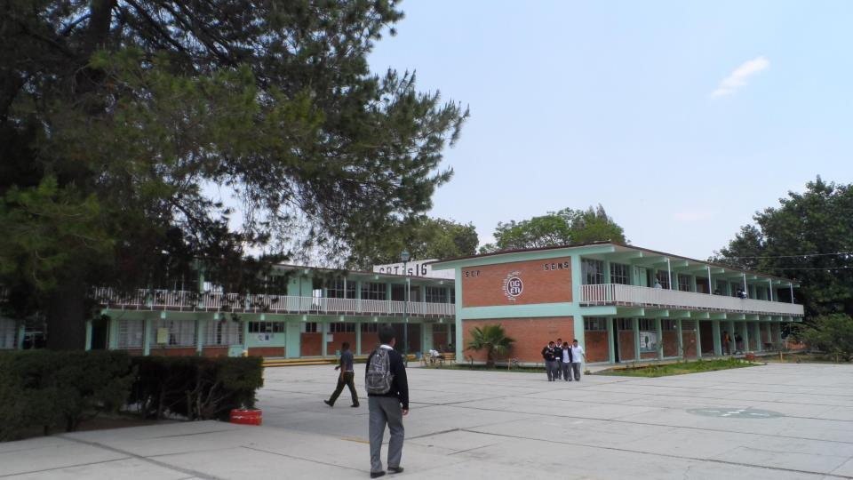

Requisitos para nuevo ingreso
- Registro de Aspirantes a partir del 10 de febrero al 25 de junio.
- Constancia de 3er. Año de Secundaria
- Acta de nacimiento (copia en reducion tamaño carta).
- 2 fotografias tamaño infantil blanco y negro (fondo gris claro).
- CURP (copia en ampliacion tamaño carta).
- Curso de nivelacion durante 7 sabados a partir del 3 de mayo, en el area de las matematicas y lectura.
- Presentar examen de admision
Contamos con 4 careras tecnincas diferentes y ofrecemos diversas becas para el alumno.
Becas
-
Oportunidades
Continuidad de la beca que traen de la secundaria
-
Educacion Media Superior
Aquellos jovenes que tengan promedio mayor a 7 y que no tengan reprobada ninguna materia. (www.becasdelaeducacionmediasuperior.gob.mx)
-
Excelencia
Alumnos con promedio de 9.4 o superior que ingresen o la obtengan en el transcurso de la carrera
-
Beca contra el abandono escolar
Carreras
Al termino de tus estudios ademas de recibir certificado de bachillerato podras tramitar tu titulo y cedula profesional, a nivel tecnico.

Calle Fray Bartolome de las Casas No. 2001 y Fray Servando Teresa de Mier, Colonia Ricardo Flores Magon, Atlixco, Pue. C.P. 74240
Tel (244) 22 5 25 43